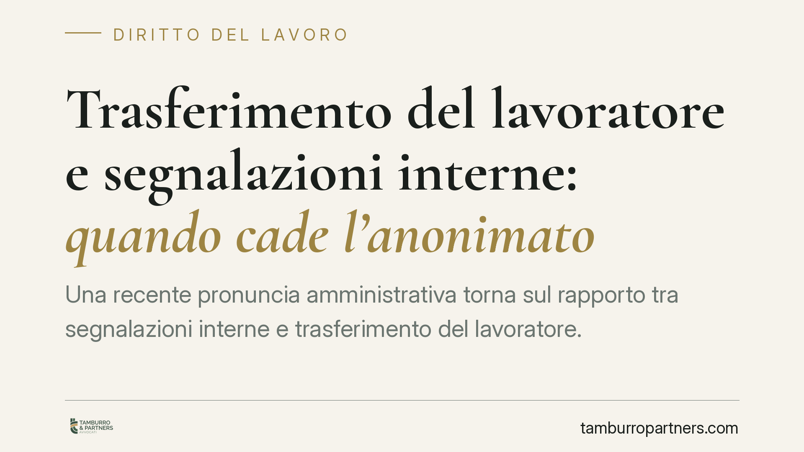

Trasferimento del lavoratore e segnalazioni interne: quando cade l'anonimato
Una recente pronuncia amministrativa torna sul rapporto tra segnalazioni interne e trasferimento del lavoratore. Il punto è netto: quando una segnalazione diventa il presupposto motivazionale di un provvedimento, il destinatario può avere diritto a conoscerla. Ma il regime cambia radicalmente a seconda che il datore sia pubblico o privato. Vediamo perché e cosa comporta in concreto.

Il caso
Un dipendente viene trasferito. Alla base del provvedimento, alcune comunicazioni interne provenienti da colleghi. Il lavoratore chiede di accedere a quei documenti: vuole conoscere il contenuto delle segnalazioni e l'identità di chi le ha formulate, per verificare la fondatezza della decisione ed eventualmente contestarla.
È una situazione ricorrente, che intreccia due esigenze contrapposte: la tutela di chi segnala e il diritto di difesa di chi subisce le conseguenze della segnalazione.
Nota sull'estremo giurisprudenziale. La pronuncia richiamata dalla stampa specializzata (indicata come TAR Veneto) va verificata nel suo esatto estremo — sezione, numero e anno — presso le fonti ufficiali prima di essere citata come precedente. In questa sede ci limitiamo a ricostruire il principio giuridico, che è consolidato a prescindere dalla singola sentenza.
L'intuizione decisiva: innesco o motivazione?
Occorre distinguere due funzioni della segnalazione.
Segnalazione come innesco. La comunicazione avvia un controllo interno, ma il provvedimento finale si fonda su elementi propri, autonomamente accertati. Qui l'interesse del segnalante alla riservatezza è più forte.
Segnalazione come presupposto motivazionale. La comunicazione *è* la ragione del provvedimento: senza di essa, il trasferimento non esisterebbe. In questo caso il documento diventa parte integrante della motivazione, e negarne la conoscenza significa privare il destinatario della possibilità di difendersi.
È questa la distinzione da tenere ferma.
Inquadramento normativo: pubblico e privato non coincidono
Il regime dell'accesso dipende dalla natura del datore.
Datore pubblico. Si applica il diritto di accesso agli atti amministrativi previsto dalla legge 7 agosto 1990, n. 241 (artt. 22 e seguenti). Quando la segnalazione entra nel procedimento come atto istruttorio o motivazionale, l'accesso difensivo tende a prevalere sulla riservatezza del terzo, in base all'art. 24, comma 7, della stessa legge. Questa disciplina vale solo per la pubblica amministrazione: non è estensibile al rapporto di lavoro privato.
Datore privato. Non opera la legge 241/1990. Il lavoratore può far valere il diritto di accesso ai propri dati personali previsto dagli artt. 15 e seguenti del Regolamento (UE) 2016/679 (GDPR), la tutela contro i controlli difensivi illegittimi ai sensi dell'art. 4 dello Statuto dei lavoratori (legge 300/1970) e la garanzia sostanziale dell'art. 2103 del codice civile, che richiede comprovate ragioni tecniche, organizzative e produttive per il trasferimento. Il diritto di accesso ai dati personali, però, incontra limiti quando ne derivi la lesione dei diritti di terzi: l'identità del segnalante non è sempre ostensibile.
Il filtro whistleblowing. Se la segnalazione rientra nell'ambito del d.lgs. 10 marzo 2023, n. 24, la riservatezza dell'identità del segnalante è tutelata in via rafforzata. Inoltre, l'art. 17 dello stesso decreto vieta le misure ritorsive — e un trasferimento può esserlo — con inversione dell'onere della prova: spetta al datore dimostrare che il provvedimento è estraneo alla segnalazione.
Cosa cambia per il destinatario
Per il lavoratore trasferito significa che non esiste una regola unica. Nel pubblico impiego l'accesso difensivo è tendenzialmente più ampio. Nel privato la strada passa per il GDPR e per la contestazione della legittimità del trasferimento sotto il profilo motivazionale, con margini più stretti sull'identità del segnalante.
Per il datore di lavoro il messaggio è che la segnalazione non basta da sola a reggere un trasferimento: serve una motivazione autonoma, documentata e coerente con l'art. 2103 c.c. Fondare il provvedimento sulla sola segnalazione anonima espone al rischio di annullamento e, in ambito whistleblowing, alla presunzione di ritorsione.
Cosa fare in concreto
- Verificate la natura del datore (pubblico o privato): da questa dipende quale disciplina di accesso invocare.
- Presentate istanza mirata: accesso agli atti ex L. 241/1990 se datore pubblico; richiesta di accesso ai dati personali ex art. 15 GDPR se datore privato.
- Ricostruite la motivazione del provvedimento: distinguete se la segnalazione è mero innesco o vero presupposto della decisione.
- Valutate il profilo ritorsivo: se la segnalazione rientra nel d.lgs. 24/2023, richiamate l'art. 17 e l'inversione dell'onere della prova.
- Documentate i tempi: date del provvedimento, della segnalazione e delle comunicazioni interne sono decisive per dimostrare il nesso.
---
Contributo informativo a cura di Tamburro & Partners — Avv. Giuseppe Tamburro. Non costituisce parere legale.
Ogni storia di lavoro ha i suoi tempi.
Se gestisci HR e vuoi un confronto su contenzioso, ispezioni o licenziamenti, scrivi allo studio. Ti rispondiamo entro un giorno lavorativo.